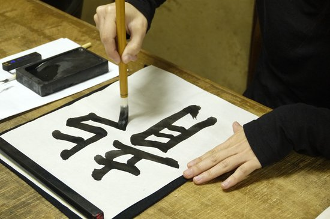
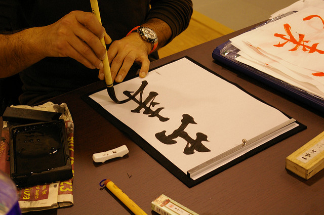
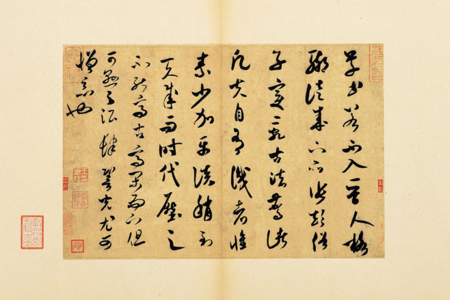
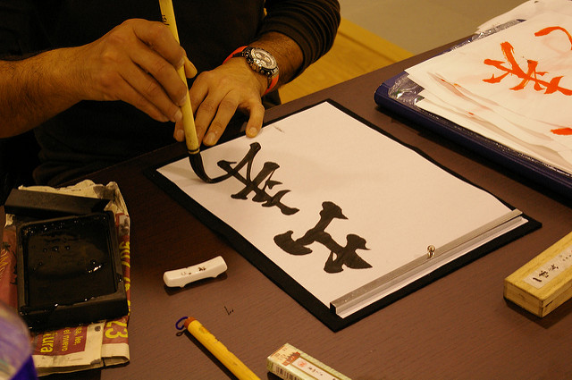
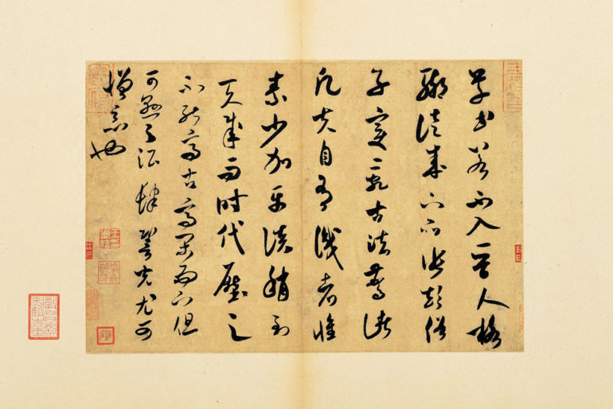

Caligrafia japoneză shodō (書道) este, ca și caligrafia în celelalte țări din sfera culturală chinezească, o ramură a artelor frumoase.
Istoria caligrafiei japoneze începe cu introducerea scrisului chinezesc în secolul 5 e.n.
Primul text de caligrafie japoneză care mai există se pare că este un comentariu despre Sutra Lotusului scris de prințul Shōtoku (574-622). Dar călugărul Kūkai (774-835) este probabil cel care a avut cea mai mare influență în a dezvolta caligrafia japoneză într-o formă estetică.
Caligrafia este și una din disciplinele pe care cei care practică artele marțiale trebuie să le studieze. De exemplu kosho shorei ryu spune că arta caligrafiei este indispensabilă unui adevărat bushi. Adevarata artă a caligrafiei implică o trăire interioară exact ca un luptator care se pregătește de luptă și iși întâmpină moartea privind-o în față, spunea Bruce Juchnik, ultimul discipol al lui James Mitose, întemeietorul stilului kosho shorei ryu.

 



×
3 / 8
❮
❯